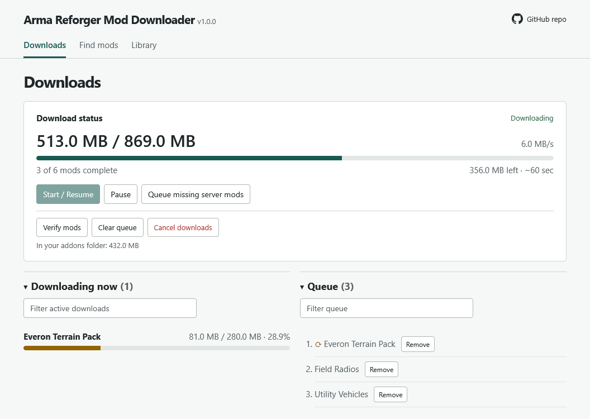

Arma Reforger Mod Downloader
Download a multiplayer server's Workshop mods before joining. Queue the server's public mod list, download individual mods, and resume paused downloads on Windows or Linux.

Install on Windows or Linux
Windows
Run the downloaded EXE. The app reuses an existing dedicated server when it finds one, or installs one through SteamCMD.
Linux
Extract the archive and run ./ReforgerModDownloader. Install PowerShell 7, SteamCMD, and the GTK 3 and WebKitGTK 4.1 Python bindings. Read the setup instructions.
Download a server's mod list
- Open Find mods and search for your server.
- Select Add server to queue missing Workshop mods from its public list.
- Watch progress in Downloads, then join the server in Arma Reforger.
To save the installed mods as a preset, close the game and choose Make preset under Tracked servers.